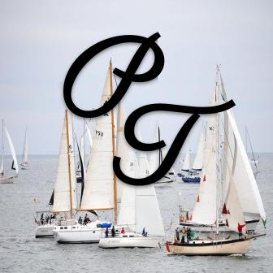

Site Purpose:
Here at the Port Townsend Chamber of Commerce, we hope you will find the information you need to start your business or make Port Townsend your home. Where to eat, where can you shop, what can families do here in Port Townsend? This is your first stop to make Port Townsend your home!